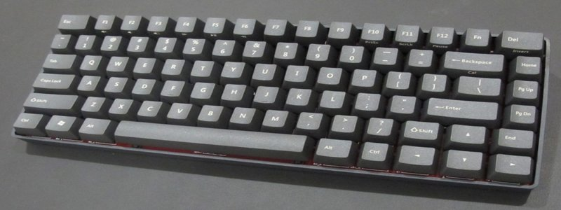

Overview
The Cherry G80-1800 is a series of PC-compatible keyboards. It is currently in production, made by Cherry. This article covers also variations of the G80-1800 where the last two digits in the model differ from 0. Several variations exist, even with the same model number. Newer keyboards have MS Windows keys, while older keyboards are winkeyless. The keycaps have been made in several types of plastics (double-shot ABS, PBT and POM) and in several colour variations. Contemporary keyboards are either completely light grey or black
Features:
- Mechanical Keyswitches are Rated at 50 Million Actuations to Withstand Harsh Environments and Ensure Long Product Lifetime
- Full QWERTY Key Layout in Compact 16” Form Factor Combines Space Efficiency with Uncompromized Alphanumeric Data Entry
- Freely Programmable Keys with CHERRY Keyman Software (USB versions)
- All Product Available with PS/2 or USB Interface
- Code set 3 support (PS/2 only)